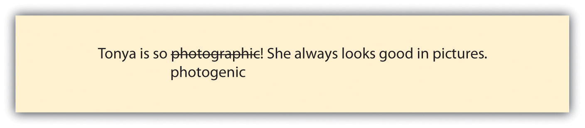

By using precise wording, you can most accurately relay your thoughts. Some strategies that can help you put your thoughts into words include focusing on denotations and connotations, balancing specific and concrete words with occasionally figurative language, and being on guard against clichés and misused words.
Consider that the words “laid-back” and “lackadaisical” both mean “unhurried and slow-moving.” If someone said you were a “laid-back” student, you would likely be just fine with that comment, but if someone said you were a “lackadaisical” student, you might not like the connotationThe emotional sense of a word; the various ways in which it can be received by a listener or reader.. Nouns, verbs, adjectives, and adverbs all have both denotationsThe definition of a word. and connotations. The denotation is the definition of a word. The connotation is the emotional sense of a word. For example, look at these three words:
The three words all mean to be stirred emotionally. In fact, you might see one of the words as a definition of another one of them. And you would definitely see the three words in a common list in a thesaurus. So the denotations for the three words are about the same. But the connotations are quite different. The word “excited” often has a positive, fun underlying meaning; “agitated” carries a sense of being upset; and “flustered” suggests a person is somewhat out of control. When you are choosing a word to use, you should first think of a word based on its denotation. Then you should consider if the connotation fits your intent. For more on using a dictionary or thesaurus to enhance and add precision to your word choices, see Section 17.4 "Using the Dictionary and Thesaurus Effectively".
You will always give clearer information if you write with specific wordsA detail within a category (e.g., cat within the category animals). rather than general wordsA category (e.g., animals).. Look at the following example and think about how you could reword it using specific terms. Then check out the following revision to see one possible option.
Original: The animals got out and ruined the garden produce.
Revision: The horses got out and ruined the tomatoes and cucumbers.
Another way to make your writing clearer and more interesting is to use concrete wordsA word that evokes a physical sense such as taste, smell, hearing, sight, or touch. rather than abstract wordsA word that does not have physical properties.. Abstract words do not have physical properties. But concrete words evoke senses of taste, smell, hearing, sight, and touch. For example, you could say, “My shoe feels odd.” This statement does not give a sense of why your shoe feels odd since odd is an abstract word that doesn’t suggest any physical characteristics. Or you could say, “My shoe feels wet.” This statement gives you a sense of how your shoe feels to the touch. It also gives a sense of how your shoe might look as well as how it might smell. Look at the following example and think about how you could reword it using concrete words. Then check out the following revision to see one possible option.
Original: The horses got out and ruined the tomatoes and cucumbers.
Revision: The horses stampeded out and squished and squirted the tomatoes and cucumbers.
Study this table for some additional examples of words that provide clarity to writing.
| General Words | Specific Words |
|---|---|
| children | Tess and Abby |
| animals | dogs |
| food | cheeseburger and a salad |
| Abstract Words | Concrete Words |
|---|---|
| noise | clanging and squealing |
| success | a job I like and enough money to live comfortably |
| civility | treating others with respect |
Figurative languageA writing tool that plays on the senses, creates special effects, or both. is a general term that includes writing tools such as alliterationRepetition of single letters or sets of letters., analogiesThe comparison of familiar and unfamiliar ideas or items by showing a feature they have in common., hyperboleA greatly exaggerated point., idiomsA group of words that carries a meaning other than the actual meanings of the words., metaphorsAn overall comparison of two ideas or items by stating that one is the other., onomatopoeiaA single word that sounds like the idea it is describing., personificationAttributing human characteristics to nonhuman things., and similesUsing the word “like” or “as” to indicate that one item or idea resembles another.. By using figurative language, you can make your writing both more interesting and easier to understand.
Alliteration: Repetition of single letters or sets of letters.
Effect: Gives a poetic, flowing sound to words.
Example: Dana danced down the drive daintily.
Analogy: The comparison of familiar and unfamiliar ideas or items by showing a feature they have in common.
Effect: Makes an unfamiliar idea or item easier to understand.
Example: Writing a book is like raising a toddler. It takes all your time and attention, but you’ll enjoy every minute of it!
Hyperbole: A greatly exaggerated point.
Effect: Emphasizes the point.
Example: I must have written a thousand pages this weekend.
Idiom: A group of words that carries a meaning other than the actual meanings of the words.
Effect: A colorful way to send a message.
Example: I think this assignment will be a piece of cake.
Metaphor: An overall comparison of two ideas or items by stating that one is the other.
Effect: Adds the connotations of one compared idea to the other compared idea.
Example: This shirt is a rag.
Onomatopoeia: A single word that sounds like the idea it is describing.
Effect: A colorful way to describe an idea while adding a sense of sound.
Example: The jazz band was known for its wailing horns and clattering drums.
Personification: Attributing human characteristics to nonhuman things.
Effect: Adds depth such as humor, drama, or interest.
Example: The spatula told me that the grill was just a little too hot today.
Simile: Using the word “like” or “as” to indicate that one item or idea resembles another.
Effect: A colorful way to explain an item or idea.
Example: Hanging out with you is like eating watermelon on a summer day.
ClichésA phrase that was once an original and interesting creation but that became so often used that it has ceased to be interesting and is now viewed as overworked. are phrases that were once original and interesting creations but that became so often used that they have ceased to be interesting and are now viewed as overworked. If you have a tendency to use a cliché or see one while you are proofreading, replace it with plain language instead.
I’m loose as a goose today.
Replace cliché: I’m very relaxed today.
Table 17.2 A Few Common Clichés
| as fresh as a daisy | as slow as molasses | as white as snow |
| beat around the bush | being led down the primrose path | big as life |
| bottomless pit | busy as a bee | can’t see the forest for the trees |
| chip off the old block | dead of winter | dirt cheap |
| don’t upset the apple cart | down to earth | flat as a pancake |
| for everything there is a season | from feast to famine | go with the flow |
| gone to pot | green with envy | growing like a weed |
| heaven on earth | here’s mud in your eye | in a nutshell |
| in the doghouse | just a drop in the bucket | knock on wood |
| light as a feather | like a duck out of water | made in the shade |
| muddy the water | naked as a jaybird | nutty as a fruitcake |
| old as dirt | our neck of the woods | plain as the nose on your face |
| raking in the dough | sick as a dog | stick in the mud |
| stubborn as a mule | sweet as apple pie | thorn in my side |
| two peas in a pod | under the weather | walks on water |
| water under the bridge | when pigs fly |
If you are uncertain about the meaning of a word, look the word up before you use it. Also, if your spellchecker identifies a misspelled word, don’t automatically accept the suggested replacement word. Make an informed decision about each word you use.
Look at the Figure 17.1.
Figure 17.1
Equipment and memories can be photographic, but to look good in pictures is to be photogenic. To catch an error of this nature, you clearly have to realize the word in question is a problem. The truth is, your best chance at knowing how a wide range of words should be used is to read widely and frequently and to pay attention to words as you read.
Fill in the blank in this sentence with a word that carries a connotation suggesting Kelly was still full of energy after her twenty laps:
Kelly ____ out of the pool at the end of her twenty laps.
Identify the general word used in this sentence and replace it with a specific word:
I put my clothes somewhere and can’t find them.
Identify the abstract word used in this sentence and replace it with a concrete word:
I smelled something strong when I opened the refrigerator door.
Identify the cliché used in the following sentence and rewrite the sentence using straightforward language:
We should be up and running by ten o’clock tomorrow morning.
Identify the misused word in the following sentence and replace it with a correct word:
I’d rather walk then have to wait an hour for the bus.